I began editing the Demographic Profile I made two weeks ago this week. I went back and added comments to my code, added regional and national context to the plots, and started converting some of the data into percentages. Below is the work I completed.
Population Plots
library(tidyverse)library(tidycensus)library(ggthemes)library(scales)### The first thing we want to visualize is population change.# 1. Population Change # Define the variables before getting the data.# The Census API code for total population for 2000 and 2010 is P001001.pop00 <-c("pop"="P001001")pop10 <-c("pop"="P001001")# The API code for total population changed for 2020.# The Census API code for total population is P1_001N for 2020. pop20 <-c("pop"="P1_001N")##### National Context: nationPop# Getting 2000 total population data for the USA.nation00 <-get_decennial(geography ="us",year =2000,variable = pop00,output ="wide") %>%mutate(year =2000)# Getting 2010 total population data for the USA.nation10 <-get_decennial(geography ="us",year =2010,variable = pop10,output ="wide") %>%mutate(year =2010)# Getting 2020 total population data for the USA.nation20 <-get_decennial(geography ="us",year =2020,variable = pop20,output ="wide") %>%mutate(year =2020)# Bind the years together using bind_rows to create data frame for national context. nationPop <- nation20 %>%bind_rows(nation10,nation00) %>%mutate(geography ="Nation") ##### Regional Context: regionPop# Getting 2000 total population data from the Midwest.region00 <-get_decennial(geography ="region",year =2000,variable = pop00,output ="wide") %>%mutate(year =2000)# Getting 2010 total population data for the Midwest.region10 <-get_decennial(geography ="region",year =2010,variable = pop10,output ="wide") %>%mutate(year =2010)# Getting 2020 total population data for the Midwest.region20 <-get_decennial(geography ="region",year =2020,variable = pop20,output ="wide") %>%mutate(year =2020)# Bind the years together using bind_rows to create data frame for regional context. # Filter to keep just the Midwest Region. regionPop <- region20 %>%bind_rows(region10,region00) %>%filter(NAME =="Midwest Region") %>%mutate(NAME =str_remove(NAME, " Region")) %>%# Use str_remove() to remove " Region" from Midwest. mutate(geography ="Region")##### State Context: statePop# Getting the 2000 total population data for the state of Iowa from the Decennial Census.iowa00 <-get_decennial(geography ="state",state ="IA",year =2000,output ="wide",variable = pop00) %>%mutate(year =2000)# Getting the 2010 total population data for the state of Iowa from the Decennial Census.iowa10 <-get_decennial(geography ="state",state ="IA",variable = pop10,year =2010,output ="wide") %>%mutate(year =2010)# Getting the 2020 total population data for the state of Iowa from the Decennial Census.iowa20 <-get_decennial(geography ="state",state ="IA",variable = pop20,year =2020,output ="wide") %>%mutate(year =2020)# Bind the years together using bind_rows to create data frame for state context. statePop <- iowa20 %>%bind_rows(iowa10,iowa00) %>%mutate(geography ="State")##### Places: # Getting 2000 total population data for all places in Iowa.place00 <-get_decennial(geography ="place",state ="IA",year =2000,output ="wide",variables = pop00) %>%mutate(year =2000)place10 <-get_decennial(geography ="place",state ="IA",year =2010,output ="wide",variables = pop10) %>%mutate(year =2010)place20 <-get_decennial(geography ="place",state ="IA",variable = pop20,year =2020,output ="wide") %>%mutate(year =2020)# Bind the years together using bind_rows() to create data frame for all places in Iowa. placePop <- place20 %>%bind_rows(place10,place00) %>%mutate(geography ="Place")# Filter for Independence, Grundy Center, and New Hampton. placePop <- placePop[placePop$NAME %in%c("Grundy Center city, Iowa", "Independence city, Iowa", "New Hampton city, Iowa"), ] %>%mutate(NAME =str_remove(NAME, " city, Iowa|, Iowa")) # Use str_remove() to remove "city, Iowa" from behind the place names. # Combine nationPop, regionPop, statePop, and placePop using bind_rows().population <- nationPop %>%bind_rows(regionPop,statePop,placePop)# Calculate the change in population.population <- population %>%group_by(NAME) %>%arrange(year) %>%mutate(pop_change = pop -lag(pop)) # Start visualizing total population now that master data frame is created. # Plot the change in total population for Independence. PLOT# Filter population for Independence.population %>%filter(NAME =="Independence") %>%ggplot(aes(x = year, y = pop))+geom_line()+geom_point(size =2)+geom_text(aes(label = scales::comma(pop)), hjust =-.31)+scale_y_continuous(label = scales::comma)+scale_x_continuous(limits =c(1997, 2023),breaks =c(2000,2010,2020))+theme_fivethirtyeight()+theme(legend.position ="bottom")+labs(title ="Change in Total Population",subtitle ="Independence, Iowa",y ="Population",x ="",color ="", caption ="2000-2020 Decennial Census")
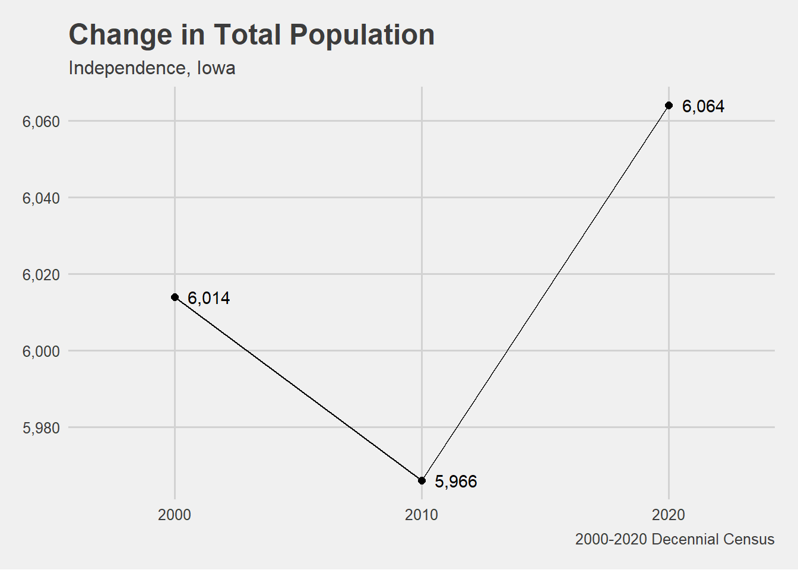
# Plot the change in total population for New Hampton. PLOT# Filter population for New Hampton.population %>%filter(NAME =="New Hampton") %>%ggplot(aes(x = year, y = pop))+geom_line()+geom_point(size =2)+geom_text(aes(label = scales::comma(pop)),hjust =-.3)+scale_y_continuous(label = scales::comma)+scale_x_continuous(limits =c(1997, 2023),breaks =c(2000,2010,2020))+theme_fivethirtyeight()+theme(legend.position ="bottom")+labs(title ="Change in Total Population",subtitle ="New Hampton, Iowa",y ="Population",x ="",color ="", caption ="2000-2020 Decennial Census")
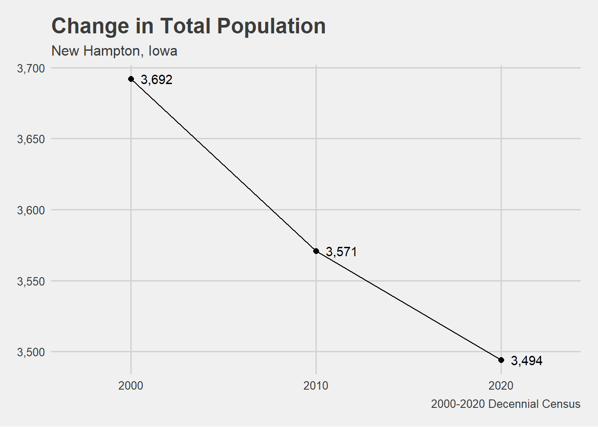
# Plot the change in total population Grundy Center. PLOT# Filter population for Grundy Center.population %>%filter(NAME =="Grundy Center") %>%ggplot(aes(x = year, y = pop))+geom_line()+geom_point(size =2)+geom_text(aes(label = scales::comma(pop)),hjust =-.3)+scale_y_continuous(label = scales::comma)+scale_x_continuous(limits =c(1997, 2023),breaks =c(2000,2010,2020))+theme_fivethirtyeight()+theme(legend.position ="bottom")+labs(title ="Change in Total Population",subtitle ="Grundy Center, Iowa",y ="Population",x ="",color ="", caption ="2000-2020 Decennial Census")
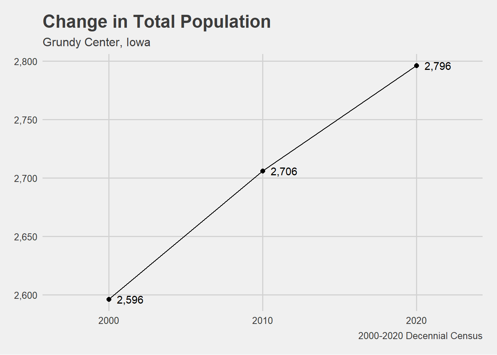
# Plot total population for all cities. PLOT # Filter for the cities. # Assign the plot to an object.population[population$NAME %in%c("Grundy Center", "Independence", "New Hampton"), ] %>%ggplot(aes(x = year, y = pop, group = NAME))+geom_line(aes(color = NAME), linewidth =1)+geom_point(size =2)+geom_text(aes(label = scales::comma(pop_change)),vjust =-1)+scale_y_continuous(label = scales::comma,limits =c(2500,6300))+scale_x_continuous(limits =c(1998, 2022),breaks =c(2000,2010,2020))+theme_fivethirtyeight()+theme(legend.position ="bottom")+labs(title ="Change in Total Population",subtitle ="2000-2020 Decennial Census",y ="Population",x ="",color ="", caption ="Variables: P1_001N and P001001")
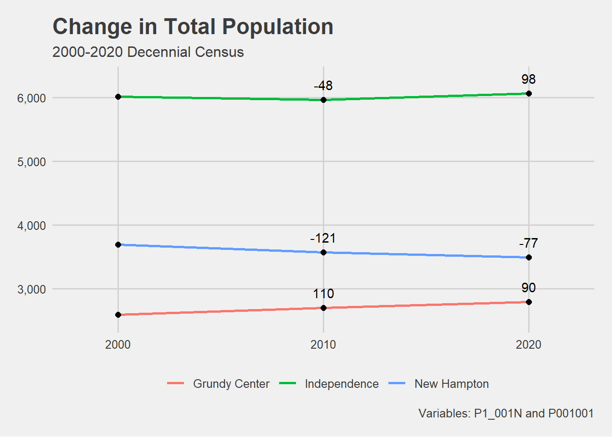
## Plot change in total population with line type = NAME. PLOTpopulation[population$NAME %in%c("Grundy Center", "Independence", "New Hampton"), ] %>%ggplot(aes(x = year, y = pop, group = NAME, linetype = NAME))+geom_line()+geom_point(size =2)+geom_text(aes(label = scales::comma(pop)),vjust =-1)+scale_y_continuous(label = scales::comma,limits =c(2500,6500))+scale_x_continuous(limits =c(1998, 2022),breaks =c(2000,2010,2020))+theme_fivethirtyeight()+theme(legend.position ="bottom")+labs(title ="Change in Total Population",subtitle ="Comparison between Grundy Center, Independence,\nand New Hampton",y ="Population",x ="",color ="", linetype ="",caption ="2000-2020 Decennial Census")
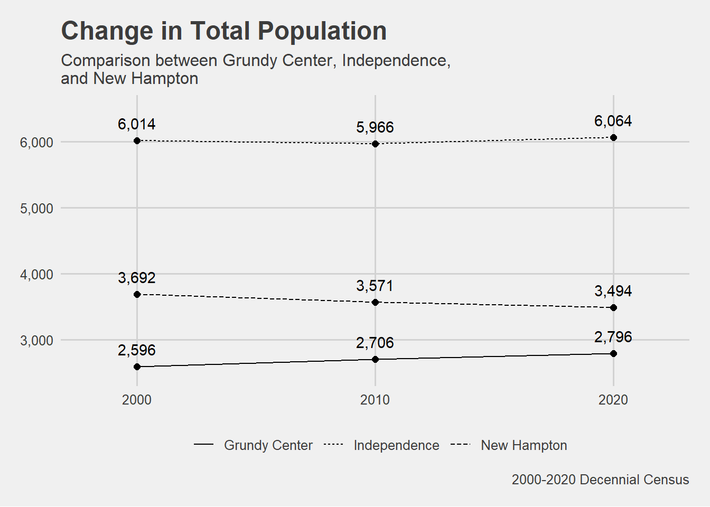
# Plot total population for all geographies. PLOT# Assign the plot to an object.population %>%ggplot(aes(x = year, y = pop, group = NAME)) +geom_line(aes(linetype = geography, color = NAME), linewidth =1)+geom_point(size =2)+scale_y_log10(label = scales::comma) +scale_x_continuous(limits =c(2000, 2020),breaks =c(2000,2010,2020))+theme_fivethirtyeight()+theme(legend.position ="bottom")+labs(title ="Change in Total Population",y ="Population (log scale)",subtitle ="2000-2020 Decennial Census",x ="",color ="", linetype ="",caption ="Variables: P1_001N and P001001")
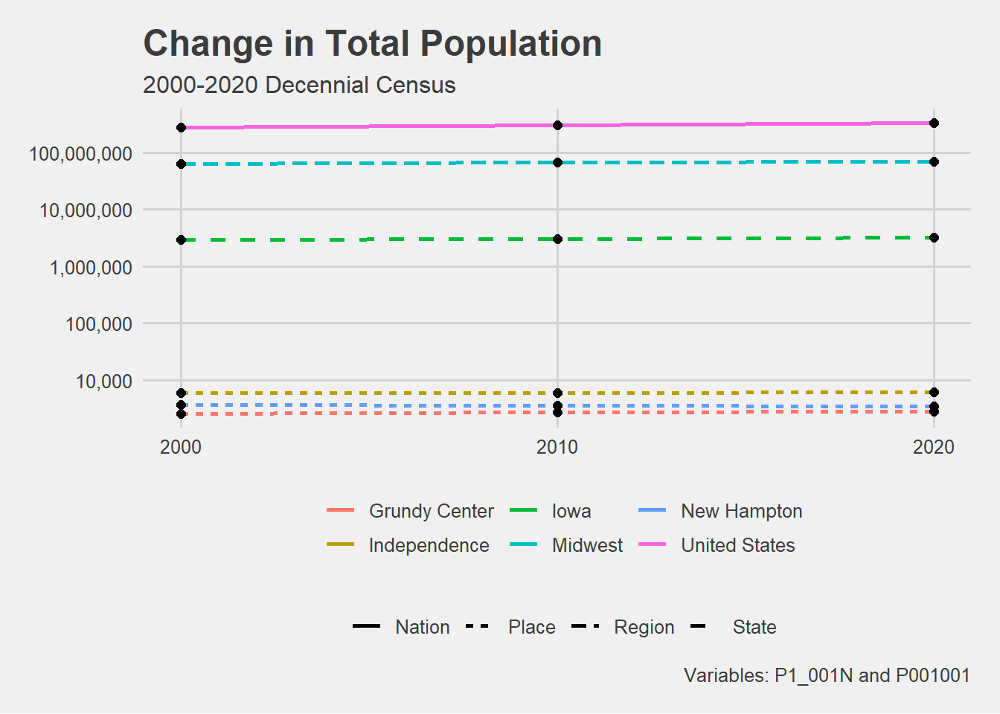
# The next thing we want to visualize is the PERCENT CHANGE in population.# 2. Percent Population Change # Create anew column called prc_change.# Group by "NAME" so that the calculations occur individually for each place. # Percent change is calculated by subtracting year2 from year1 and dividing by year2. population <- population %>%group_by(NAME) %>%mutate(prc_change =case_when( year ==2000~NA, year ==2010~ (pop -lag(pop, n =10, default =last(pop))) /lag(pop, n =10, default =last(pop)), year ==2020~ (pop -lag(pop, n =20, default =last(pop))) /lag(pop, n =20, default =last(pop)) ))# Create a grouping column in the population datapopulation <- population %>%mutate(grouping =ifelse(NAME %in%c("United States", "Midwest", "Iowa"), "Contextual Area", "Places"))## Plot the percent change in population for all geographies. PLOT# Assign the plot to an object.population %>%ggplot(aes(x = year, y = prc_change, group = NAME)) +geom_line(aes(color = NAME, linetype = grouping), linewidth =1) +geom_text(aes(x=2020.65, y = .1777, label ="17.77%"), size =3.5) +geom_text(aes(x=2020.65, y = .09023, label ="9.02%"), vjust =-.2, size =3.5) +geom_text(aes(x=2020.65, y = .07132, label ="7.13%"), vjust =1.2, size =3.5) +geom_text(aes(x=2020.65, y = .0770416, label ="7.70%"), size =3.5, vjust =-.000002) +geom_text(aes(x=2020.65, y = .0083139, label ="0.83%"), size =3.5) +geom_text(aes(x=2020.65, y =-.053629, label ="-5.36%"), size =3.5) +geom_point(size =2) +scale_y_continuous(label = scales::percent) +scale_x_continuous(breaks =c(2010, 2015,2020), limits =c(2010,2021)) +theme_fivethirtyeight() +theme(strip.text =element_text(face ="bold"))+labs(title ="Percent Change in Total Population",subtitle ="2000-2020 Decennial Census",color ="",caption ="Variables: P1_001N and P001001",linetype ="")
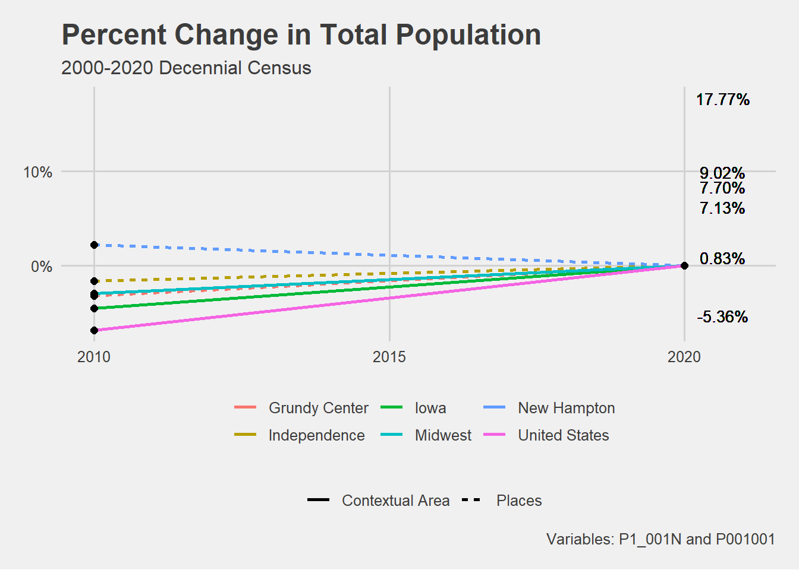
## Plot the percent change in total population for just the places.# Filter the population data frame for places. # Assign the plot to an object.population[population$NAME %in%c("Grundy Center", "Independence", "New Hampton"), ] %>%ggplot(aes(x = year, y = prc_change, group = NAME)) +geom_line(aes(color = NAME), linewidth =1) +geom_point(size =2) +geom_text(aes(label = scales::percent(prc_change)), hjust = .5,vjust =-.75 )+scale_y_continuous(label = scales::percent, limits =c(-.06,.085)) +scale_x_continuous(breaks =c(2010,2015, 2020), limits =c(2008, 2022)) +theme_fivethirtyeight() +theme(strip.text =element_text(face ="bold"),legend.position ="bottom")+# Align legend to the rightlabs(title ="Percent Change in Total Population",subtitle ="2000-2020 Decennial Census",color ="",caption ="Variables: P1_001N and P001001",linetype ="")
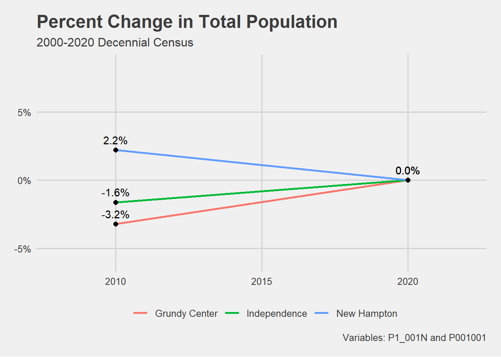
# Finally, we want to visualize the population estimates. # In this case, we will be estimated the 2030 population.# 3. Population Estimates # Calculate AAAC for each geography.# AAAC = 2020 population - 2000 population / 20# AKA. AAAC = population - population / timepopulation <- population %>%group_by(NAME) %>%mutate(AAAC = (pop[year ==2020] - pop[year ==2000]) /20)# Create a new data frame for the projected population in 2030.proj_2030 <- population %>%filter(year ==2020) %>%mutate(year =2030, pop = pop + (AAAC*10))# Combine the original data frame and the projected population data for 2030.population <-bind_rows(population, proj_2030)# Remove the AAAC column.population <- population %>%select(-AAAC)# Add a new column specifying if the population is actual or a projection.population <- population %>%mutate(type =if_else(year ==2030, "Projection", "Actual"))# Plot the actual and projected total population from 2000 to 2030 PLOT population[population$NAME %in%c("Grundy Center", "Independence", "New Hampton"), ] %>%ggplot(aes(x = year, y = pop, group = NAME, linetype = NAME)) +geom_line(linewidth =1)+geom_point(aes(color = type), size =2)+geom_text(aes(label = scales::comma(round(pop))),vjust =-1)+theme_fivethirtyeight()+scale_y_continuous(labels = scales::comma,limits =c(2500,6500))+scale_x_continuous(limits =c(1998,2032),labels =c("2000","2010","2020", "2030 Est."))+theme(legend.position ="bottom")+labs(x ="",color ="",linetype ="",title ="Total Population",caption ="2030 Population Estimated with AAAC\nVariables: P1_001N and P001001",subtitle ="2000-2020 Decennial Census")
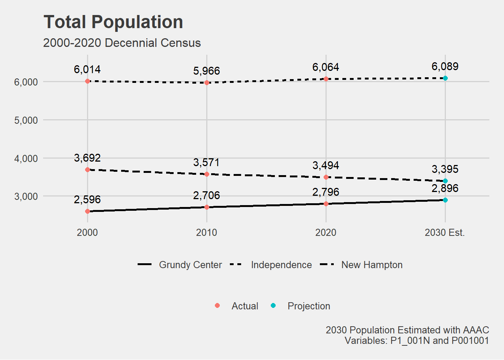
Median Income Plots
# Median Income# Getting median income data from the 5-Year American Community Survey. # The median income variable is "B19013_001."# Create an object called "years" that lists the years you want to pull data from. # We want all of the years the ACS data is available. years <-2009:2021names(years) <- years# Use get_acs() to pull median income data at the place level.placeIncome <-map_dfr(years, ~{get_acs(geography ="place",variables =c("median_income"="B19013_001"),state ="IA",year = .x,survey ="acs5",output ="wide" )}, .id ="year") # Remove the " city, Iowa|, Iowa" from the end of the place names.placeIncome <- placeIncome %>%mutate(NAME =str_remove(NAME, " city, Iowa|, Iowa"))# Filter placeIncome for desired cities.# Add a geography column.placeIncome <- placeIncome %>%filter(NAME %in%c("Grundy Center", "Independence", "New Hampton")) %>%mutate(geography ="Place")# Use get_acs() to pull median income data at the state level.stateIncome <-map_dfr(years, ~{get_acs(geography ="state",variables =c("median_income"="B19013_001"),state ="IA",year = .x,survey ="acs5",output ="wide" )}, .id ="year") # Add a geography column. stateIncome <- stateIncome %>%mutate(geography ="State")# Use get_acs() to pull median income data at the regional level.regionIncome <-map_dfr(years, ~{get_acs(geography ="region",variables =c("median_income"="B19013_001"),year = .x,survey ="acs5",output ="wide" )}, .id ="year") # Remove the " Region" from the end of the region names.regionIncome <- regionIncome %>%mutate(NAME =str_remove(NAME, " Region"))# Filter regionIncome for Midwest.# Add a geography column.regionIncome <- regionIncome %>%filter(NAME %in%"Midwest") %>%mutate(geography ="Region")# Use get_acs() to pull median income data at the national level.nationIncome <-map_dfr(years, ~{get_acs(geography ="us",variables =c("median_income"="B19013_001"),year = .x,survey ="acs5",output ="wide" )}, .id ="year")# Add a geography column.nationIncome <- nationIncome %>%mutate(geography ="Nation")# Bind all geographies together with bind_rows().income <- nationIncome %>%bind_rows(regionIncome, stateIncome, placeIncome)# Add a new column specifying if the geography is a nation, region, state, or place. income <- income %>%mutate(grouping =ifelse(NAME %in%c("United States", "Midwest", "Iowa"), "Contextual Area", NAME))# Create three separate plots for Grundy Center, Independence and New Hampton.# Combine plots together using patchwork library. #install.packages("patchwork")library(patchwork)# Plot the median income for Grundy Center and its contextual geographies. PLOTplot1 <- income[income$NAME %in%c("Grundy Center", "United States", "Midwest", "Iowa"), ] %>%ggplot(aes(x = year, y = median_incomeE, group = NAME)) +geom_ribbon(aes(ymax = median_incomeE + median_incomeM, ymin = median_incomeE - median_incomeM, fill = geography),alpha =0.3) +geom_line(aes(color = geography), linewidth =1)+theme_fivethirtyeight()+scale_y_continuous(labels =label_dollar(scale = .001, suffix ="k"),limits =c(32250,80000))+theme(legend.position ="none", axis.text.x =element_text(angle =45, hjust =1)) +labs(x ="",color ="",linetype ="",subtitle ="2009-2021 5-Year ACS Estimates\nGrundy Center",fill ="",title ="Median Income") # Plot the median income for Independence and its contextual geographies. PLOT plot2 <- income[income$NAME %in%c("Independence", "United States", "Midwest", "Iowa"), ] %>%ggplot(aes(x = year, y = median_incomeE, group = NAME)) +geom_ribbon(aes(ymax = median_incomeE + median_incomeM, ymin = median_incomeE - median_incomeM, fill = geography),alpha =0.3) +geom_line(aes(color = geography), linewidth =1)+theme_fivethirtyeight()+scale_y_continuous(labels =label_dollar(scale = .001, suffix ="k"),limits =c(32250,80000))+theme(legend.position ="none", axis.text.x =element_text(angle =45, hjust =1))+labs(x ="",color ="",linetype ="",subtitle ="\nIndependence",caption ="",fill ="")# Plot the median income for New Hampton and its contextual geographies. PLOT plot3 <- income[income$NAME %in%c("New Hampton", "United States", "Midwest", "Iowa"), ] %>%ggplot(aes(x = year, y = median_incomeE, group = NAME)) +geom_ribbon(aes(ymax = median_incomeE + median_incomeM, ymin = median_incomeE - median_incomeM, fill = geography),alpha =0.3) +geom_line(aes(color = geography), linewidth =1)+theme_fivethirtyeight()+scale_y_continuous(labels =label_dollar(scale = .001, suffix ="k"),limits =c(32250,80000))+theme(legend.position ="bottom",axis.text.x =element_text(angle =45, hjust =1))+labs(x ="",color ="",linetype ="",subtitle ="\nNew Hampton",fill ="",caption ="Shaded area represents margin of error around the ACS estimate\nVariable: B19013_001")# Combine plots. combined_plots <-wrap_plots(plot1, plot2, plot3)
Median Year Built and Median Value by Year Built Plots
# House Age # Want to plot Year Built data as percentages to standardize that data over different geography sizes.# Get Year Built data and Total Structure data from 2021 5-year American Community Survey (ACS) for all places in Iowa.placeAge <-get_acs(geography ="place", state ="IA", variables =c("2020 or later"="B25034_002", "2010 to 2019"="B25034_003", "2000 to 2009"="B25034_004","1990 to 1999"="B25034_005","1980 to 1989"="B25034_006","1970 to 1979"="B25034_007","1960 to 1969"="B25034_008","1950 to 1959"="B25034_009","1940 to 1949"="B25034_010","1939 or earlier"="B25034_011","total"="B25034_001"), year =2021)# Filter for desired cities. placeAge <- placeAge %>%filter(NAME %in%c("Grundy Center city, Iowa", "Independence city, Iowa", "New Hampton city, Iowa"))# Remove " city, Iowa" using str_remove().placeAge <- placeAge %>%mutate(NAME =str_remove(NAME, "city, Iowa"))# Group the house age data frame by NAME and calculate the percent by dividing the estimate value by the total value. placeAge <- placeAge %>%group_by(NAME) %>%mutate(percent = estimate/first(estimate)) %>%filter(variable !="total") # Removes rows containing the total.# Get Year Built data and Total Structure data from 2021 5-year American Community Survey (ACS) for Iowa.stateAge <-get_acs(geography ="state", state ="IA", variables =c("2020 or later"="B25034_002", "2010 to 2019"="B25034_003", "2000 to 2009"="B25034_004","1990 to 1999"="B25034_005","1980 to 1989"="B25034_006","1970 to 1979"="B25034_007","1960 to 1969"="B25034_008","1950 to 1959"="B25034_009","1940 to 1949"="B25034_010","1939 or earlier"="B25034_011","total"="B25034_001"), year =2021)# Calculate the percent by dividing the estimate value by the total value. stateAge <- stateAge %>%mutate(percent = estimate/first(estimate)) %>%filter(variable !="total") # Removes rows containing the total.# Get Year Built data and Total Structure data from 2021 5-year American Community Survey (ACS) for the Midwest.regionAge <-get_acs(geography ="region", variables =c("2020 or later"="B25034_002", "2010 to 2019"="B25034_003", "2000 to 2009"="B25034_004","1990 to 1999"="B25034_005","1980 to 1989"="B25034_006","1970 to 1979"="B25034_007","1960 to 1969"="B25034_008","1950 to 1959"="B25034_009","1940 to 1949"="B25034_010","1939 or earlier"="B25034_011","total"="B25034_001"), year =2021)# Filter for desired cities. regionAge <- regionAge %>%filter(NAME =="Midwest Region")# Remove " city, Iowa" using str_remove().regionAge <- regionAge %>%mutate(NAME =str_remove(NAME, " Region"))# Group the house age data frame by NAME and calculate the percent by dividing the estimate value by the total value. regionAge <- regionAge %>%mutate(percent = estimate/first(estimate)) %>%filter(variable !="total") # Removes rows containing the total.# Get Year Built data and Total Structure data from 2021 5-year American Community Survey (ACS) for the United States.nationAge <-get_acs(geography ="us", variables =c("2020 or later"="B25034_002", "2010 to 2019"="B25034_003", "2000 to 2009"="B25034_004","1990 to 1999"="B25034_005","1980 to 1989"="B25034_006","1970 to 1979"="B25034_007","1960 to 1969"="B25034_008","1950 to 1959"="B25034_009","1940 to 1949"="B25034_010","1939 or earlier"="B25034_011","total"="B25034_001"), year =2021)# Calculate the percent by dividing the estimate value by the total value. nationAge <- nationAge %>%mutate(percent = estimate/first(estimate)) %>%filter(variable !="total") # Removes rows containing the total.# Bind contextual data together using bind_rows().contextAge <- stateAge %>%bind_rows(regionAge, nationAge)# Plot the Year Built data. PLOT# Group by name. Set geom_col() position to dodge to get the data displayed side by side. house_age <-ggplot() +geom_line(data = contextAge, aes(x = variable, y = percent, group = NAME, linetype = NAME), linewidth =1, alpha = .6) +geom_col(data = placeAge, aes(x = variable, y = percent, group = NAME, fill = NAME), position ="dodge", alpha = .9) +scale_y_continuous(labels = scales::percent) +theme_fivethirtyeight() +theme(legend.position ="none") +labs(title ="Year Structure Built",subtitle ="2017-2021 5-Year ACS Estimates",x ="",y ="ACS estimate",fill ="",linetype ="")+# caption = "Variables: B25034_002, B25034_003, B25034_004, B25034_005, B25034_006,\nB25034_007, B25034_008, B25034_009,B25034_010, B25034_011, B25034_001")+theme(axis.text.x =element_text(angle =30, hjust =1))# Median Home Value by Year Structure Built # Get data from 2021 5-year American Community Survey for all places in Iowa.placeValueAge <-get_acs(geography ="place", state ="IA", variables =c("2020 or later"="B25107_002", "2010 to 2019"="B25107_003", "2000 to 2009"="B25107_004","1990 to 1999"="B25107_005","1980 to 1989"="B25107_006","1970 to 1979"="B25107_007","1960 to 1969"="B25107_008","1950 to 1959"="B25107_009","1940 to 1949"="B25107_010","1939 or earlier"="B25107_011"), year =2021)# Filter for desired cities. placeValueAge <- placeValueAge %>%filter(NAME %in%c("Grundy Center city, Iowa", "Independence city, Iowa", "New Hampton city, Iowa")) %>%mutate(NAME =str_remove(NAME, " city, Iowa"))# Get data from 2021 5-year American Community Survey for Iowa.stateValueAge <-get_acs(geography ="state", state ="IA", variables =c("2020 or later"="B25107_002", "2010 to 2019"="B25107_003", "2000 to 2009"="B25107_004","1990 to 1999"="B25107_005","1980 to 1989"="B25107_006","1970 to 1979"="B25107_007","1960 to 1969"="B25107_008","1950 to 1959"="B25107_009","1940 to 1949"="B25107_010","1939 or earlier"="B25107_011"), year =2021)# Get data from 2021 5-year American Community Survey for the Midwest.regionValueAge <-get_acs(geography ="region", variables =c("2020 or later"="B25107_002", "2010 to 2019"="B25107_003", "2000 to 2009"="B25107_004","1990 to 1999"="B25107_005","1980 to 1989"="B25107_006","1970 to 1979"="B25107_007","1960 to 1969"="B25107_008","1950 to 1959"="B25107_009","1940 to 1949"="B25107_010","1939 or earlier"="B25107_011"), year =2021)# Filter for the Midwest. regionValueAge <- regionValueAge %>%filter(NAME =="Midwest Region") %>%mutate(NAME =str_remove(NAME, " Region"))# Get data from 2021 5-year American Community Survey for the United States.nationValueAge <-get_acs(geography ="us", variables =c("2020 or later"="B25107_002", "2010 to 2019"="B25107_003", "2000 to 2009"="B25107_004","1990 to 1999"="B25107_005","1980 to 1989"="B25107_006","1970 to 1979"="B25107_007","1960 to 1969"="B25107_008","1950 to 1959"="B25107_009","1940 to 1949"="B25107_010","1939 or earlier"="B25107_011"), year =2021)# Join all geographies.contextValueAge <- stateValueAge %>%bind_rows(regionValueAge, nationValueAge)# plot median home value by year structure built PLOThouse_value_by_year <-ggplot() +geom_line(data = contextValueAge, aes(x = variable, y = estimate, group = NAME, linetype = NAME), linewidth =1, alpha = .6) +geom_col(data = placeValueAge, aes(x = variable, y = estimate, group = NAME, fill = NAME), position ="dodge", alpha = .9) +scale_y_continuous(labels = scales::dollar) +theme_fivethirtyeight() +labs(title ="Median Home Value by Year Structure Built",subtitle ="2017-2021 5-Year ACS Estimates",x ="",y ="ACS estimate",fill ="",linetype ="",caption ="Variables: B25034_002, B25034_003, B25034_004, B25034_005, B25034_006,\nB25034_007, B25034_008, B25034_009,B25034_010, B25034_011, B25034_001") +theme(axis.text.x =element_text(angle =30, hjust =1))#Use patchwork library to parse together year built and median value by year built plots.library(patchwork)value_and_year_built <- house_age +house_value_by_year +plot_layout(ncol =1)
Median House Value Plots
# Median House Value # Getting housing value data from the 5-year 2020 American Community Survey.# Specify county for just Chickasaw, Grundy, and Buchanan County.# The API Code for median home value is "B25077_001."housing_val <-get_acs(geography ="tract", variables ="B25077_001", state ="IA", county =c("Chickasaw","Grundy","Buchanan" ),year =2020)# Separate the median home value data into three separate geographies: tract, county, and state.housing_val2 <-separate( housing_val, NAME, into =c("tract", "county", "state"), sep =", ") # Filter median home value data by census tract. # The city of Independence falls into two census tracts: 9505 and 9504.# Grundy Center is in tract 9603.# New Hampton is in tract 704.# Add a new column called "city" with the associated city name. ind_house_val <- housing_val2 %>%filter(tract ==c("Census Tract 9505", "Census Tract 9504")) %>%mutate(city ="Independence")hampton_house_val <- housing_val2 %>%filter(tract =="Census Tract 704") %>%mutate(city ="New Hampton")grundy_house_val <- housing_val2 %>%filter(tract =="Census Tract 9603") %>%mutate(city ="Grundy Center")# Bind individual data frames together with bind_rows().cities_house_val <- ind_house_val %>%bind_rows(hampton_house_val,grundy_house_val)# Use the summarize function to find the minimum, maximum, median and mean of the median home value estimates. cities_house_val %>%group_by(city) %>%summarize(min =min(estimate, na.rm =TRUE), mean =mean(estimate, na.rm =TRUE), median =median(estimate, na.rm =TRUE), max =max(estimate, na.rm =TRUE))
# A tibble: 3 x 5
city min mean median max
<chr> <dbl> <dbl> <dbl> <dbl>
1 Grundy Center 135900 135900 135900 135900
2 Independence 133200 136400 136400 139600
3 New Hampton 117500 117500 117500 117500
# Cannot visualize cities_house_val using this ggplot method because Grundy Center and New Hampton only have one value.# Plot housing value by county instead.# Add in a point that displays the median for each city from the 2020 5-Year ACS.housing_val3 <-get_acs(geography ="place", variables ="B25077_001", state ="IA",year =2020) %>%filter(NAME %in%c("Grundy Center city, Iowa","New Hampton city, Iowa", "Independence city, Iowa"))# grundy center = $130,600# new hampton = $112,200# independence = $129,900# Create a density plot for median home value. PLOTggplot(housing_val2, aes(x = estimate, fill = county)) +geom_density(alpha =0.3, linewidth =1) +geom_point(aes(y =0.00002074, x =112200), size =2) +# New Hamptongeom_point(aes(x =129900, y = .00001405), size =2) +# Independencegeom_point(aes(x =130600, y = .0000227), size =2) +# Grundy Centergeom_text(aes(y =0.00002074, x =112200, label ="New Hampton\n$112,200"), hjust =-.1, vjust =1) +geom_text(aes(x =129900, y = .00001405, label ="Independence\n$129,900"), hjust =-.1, vjust =1) +geom_text(aes(x =130600, y = .0000227, label ="Grundy Center\n$130,600"), hjust =1.1, vjust =-.15) +labs(title ="Median House Values by Census Tract",subtitle ="2016-2020 5-Year ACS Estimates",y ="",x ="Median House Value",caption ="Points represent median house value for each city\nVariable: B25077_001",fill ="")+scale_x_continuous(labels =dollar_format()) +scale_y_continuous(labels = scales::comma,limits =c(0,.000026))+theme_fivethirtyeight()
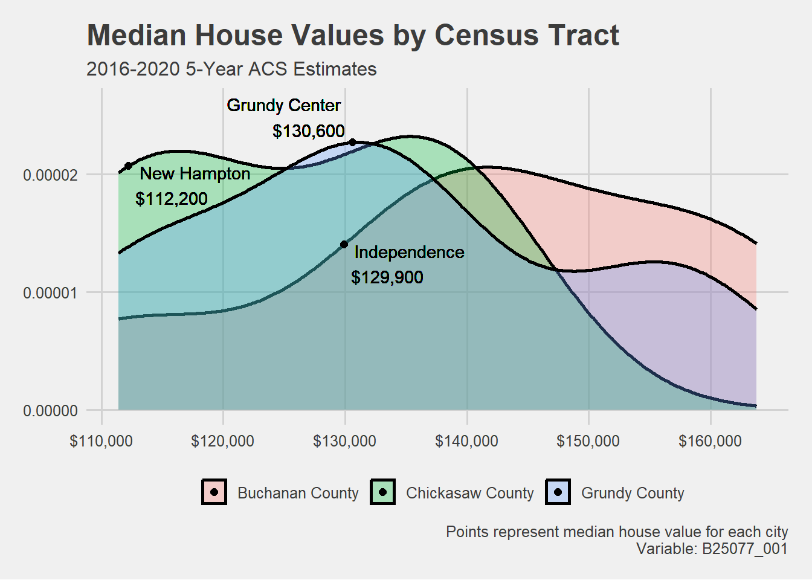
# Now, want to plot all available data for median home value. # Getting median home value data from the 5-Year American Community Survey. # The median home value code is "B25077_001."# Create an object called "years" that lists the years you want to pull data from. # We want all of the years the ACS data is available. years <-2009:2021names(years) <- years# Use get_acs() to pull median home value data at the place level.placeValue <-map_dfr(years, ~{get_acs(geography ="place",variables =c("median_value"="B25077_001"),state ="IA",year = .x,survey ="acs5",output ="wide" )}, .id ="year") # Remove the " city, Iowa|, Iowa" from the end of the place names.placeValue <- placeValue %>%mutate(NAME =str_remove(NAME, " city, Iowa|, Iowa"))# Filter placeValue for desired cities.# Add a geography column.placeValue <- placeValue %>%filter(NAME %in%c("Grundy Center", "Independence", "New Hampton")) %>%mutate(geography ="Place")# Use get_acs() to pull median home value data at the state level.stateValue <-map_dfr(years, ~{get_acs(geography ="state",variables =c("median_value"="B25077_001"),state ="IA",year = .x,survey ="acs5",output ="wide" )}, .id ="year") # Add a geography column. stateValue <- stateValue %>%mutate(geography ="State")# Use get_acs() to pull median home value data at the regional level.regionValue <-map_dfr(years, ~{get_acs(geography ="region",variables =c("median_value"="B25077_001"),year = .x,survey ="acs5",output ="wide" )}, .id ="year") # Remove the " Region" from the end of the region namesregionValue<- regionValue %>%mutate(NAME =str_remove(NAME, " Region"))# Filter regionValue for Midwest.# Add a geography column.regionValue <- regionValue %>%filter(NAME %in%"Midwest") %>%mutate(geography ="Region")# Use get_acs() to pull median home value data at the national level.nationValue <-map_dfr(years, ~{get_acs(geography ="us",variables =c("median_value"="B25077_001"),year = .x,survey ="acs5",output ="wide" )}, .id ="year")# Add a geography column.nationValue <- nationValue %>%mutate(geography ="Nation")# Bind all geographies together with bind_rows().value <- nationValue %>%bind_rows(regionValue, stateValue, placeValue)# Add a new column specifying if the geography is a nation, region, state, or place. value <- value %>%mutate(grouping =ifelse(NAME %in%c("United States", "Midwest", "Iowa"), "Contextual Area", NAME))# Create three separate plots for Grundy Center, Independence and New Hampton.# Combine plots together using patchwork library. #install.packages("patchwork")library(patchwork)# Plot the median home value for Grundy Center and its contextual geographies. PLOTplot1 <- value[value$NAME %in%c("Grundy Center", "United States", "Midwest", "Iowa"), ] %>%ggplot(aes(x = year, y = median_valueE, group = NAME)) +geom_ribbon(aes(ymax = median_valueE + median_valueM, ymin = median_valueE - median_valueM, fill = geography),alpha =0.3) +geom_line(aes(color = geography), linewidth =1)+theme_fivethirtyeight()+scale_y_continuous(labels =label_dollar(scale = .001, suffix ="k"),limits =c(85000,250000))+theme(legend.position ="none",axis.text.x =element_text(angle =45, hjust =1))+labs(x ="",color ="",linetype ="",subtitle ="2009-2021 5-Year ACS Estimates\nGrundy Center",fill ="",title ="Median Home Value")# Plot the median home value for Independence and its contextual geographies. PLOT plot2 <- value[value$NAME %in%c("Independence", "United States", "Midwest", "Iowa"), ] %>%ggplot(aes(x = year, y = median_valueE, group = NAME)) +geom_ribbon(aes(ymax = median_valueE + median_valueM, ymin = median_valueE - median_valueM, fill = geography),alpha =0.3) +geom_line(aes(color = geography), linewidth =1)+theme_fivethirtyeight()+scale_y_continuous(labels =label_dollar(scale = .001, suffix ="k"),limits =c(85000,250000))+theme(legend.position ="none",axis.text.x =element_text(angle =45, hjust =1))+labs(x ="",color ="",linetype ="",subtitle ="\nIndependence",fill ="")# Plot the median value for New Hampton and its contextual geographies. PLOT plot3 <- value[value$NAME %in%c("New Hampton", "United States", "Midwest", "Iowa"), ] %>%ggplot(aes(x = year, y = median_valueE, group = NAME)) +geom_ribbon(aes(ymax = median_valueE + median_valueM, ymin = median_valueE - median_valueM, fill = geography),alpha =0.3) +geom_line(aes(color = geography), linewidth =1)+theme_fivethirtyeight()+scale_y_continuous(labels =label_dollar(scale = .001, suffix ="k"),limits =c(85000,250000))+theme(legend.position ="bottom",axis.text.x =element_text(angle =45, hjust =1))+labs(x ="",color ="",linetype ="",subtitle ="\nNew Hampton",fill ="",caption ="Shaded area represents margin of error around the ACS estimate\nVariable: B25077_001")# Combine plots. combined_plots1 <-wrap_plots(plot1, plot2, plot3)# Plot just the city median home value data. PLOTvalue[value$NAME %in%c("Grundy Center", "New Hampton", "Independence"), ] %>%ggplot(aes(x = year, y = median_valueE, group = NAME, fill = NAME)) +geom_ribbon(aes(ymax = median_valueE + median_valueM, ymin = median_valueE - median_valueM),alpha =0.3) +geom_line(aes(color = NAME), linewidth =1) +theme_fivethirtyeight() +scale_y_continuous(labels =label_dollar(scale = .001, suffix ="k")) +labs(title ="Median Home Value",subtitle ="2009-2021 5-Year ACS Estimates",x ="Year",y ="ACS estimate",fill ="",color ="",caption ="Shaded area represents margin of error around the ACS estimate\nVariable: B25077_001") +geom_text(aes(x ="2021", y =137100, label ="$137,000"), vjust =-1)+geom_text(aes(x ="2021", y =133300, label ="$133,300"), vjust =2) +geom_text(aes(x ="2021", y =122600, label ="$122,600"), vjust =-1)
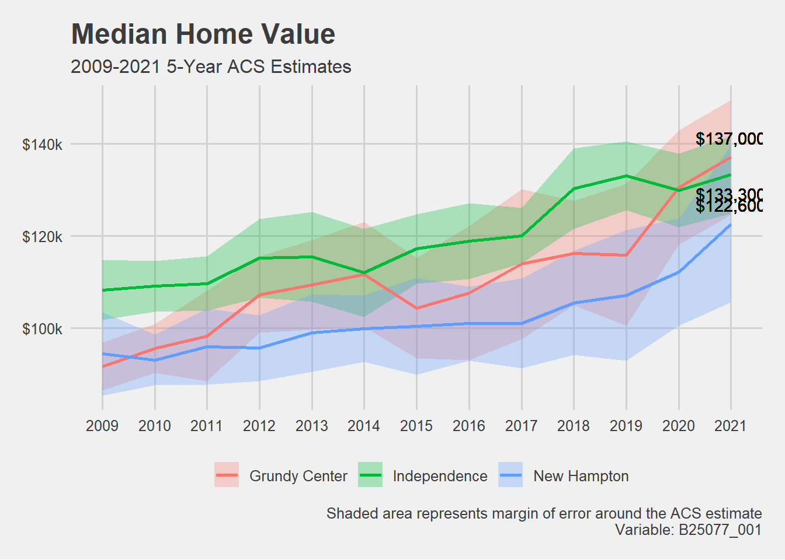
Housing Occupancy Plots
```{r}, warning = FALSE, message = FALSE} # Home Ownership, Rental, and Vacancy Rates
Getting owner occupied data and total occupied units from 5-Year American Community Survey.
ggplot() + geom_line(data = vacancy_contextRate, aes(x = year, y = percent, group = NAME, linetype = NAME), color = “black”, linewidth = 1, alpha = .4) + geom_line(data = vacancy_placeRate, aes(x = year, y = percent, group = NAME, color = NAME), linewidth = 1.5) + scale_y_continuous(labels = scales::percent, limits = c(.0, .15), breaks = c(0, .05, .1, .15)) + labs(title = “Vacancy Rate”, subtitle = “2009-2021 5-Year ACS Estimates”, caption = “Variable: B25002_003”, color = ““, linetype =”“, x =”“, y =”“) + theme_fivethirtyeight()
### Reason for Vacancy Plot
```{r}, warning = FALSE, message = FALSE}
# Reason for Vacancy
placeReason <- get_acs(geography = "place",
state = "IA",
year = 2021,
variables = c("For rent" = "B25004_002",
"Rented, not occupied" = "B25004_003",
"For sale" = "B25004_004",
"Sold, not occupied" = "B25004_005",
"Seasonal" = "B25004_006",
"Migrant worker" = "B25004_007",
"Other" = "B25004_008",
"total" = "B25004_001"))
# Filter for desired cities.
placeReason <- placeReason %>%
filter(NAME %in% target_cities) %>%
mutate(NAME = str_remove(NAME, " city, Iowa"))
# Turn values into percents of the total.
placeReason <- placeReason %>%
group_by(NAME) %>%
mutate(percent = estimate / first(estimate)) %>%
filter(variable != "total")
# Plot reason for vacancy. PLOT
placeReason %>%
ggplot(aes(x=factor(variable, level=c("For rent","Rented, not occupied","For sale","Sold, not occupied","Seasonal","Migrant worker","Other")), y = percent, group = NAME, fill = NAME)) +
geom_col(position = "dodge") +
theme_fivethirtyeight()+
scale_y_continuous(labels = scales::percent,
breaks = c(0,.1,.2,.3,.4)) +
labs(title = "Reason for Vacancy",
subtitle = "2017-2021 5-Year ACS Estimates",
x = "",
y = "ACS estimate",
fill = "",
alpha = "",
caption = "Variables: B25004_001, B25004_002, B25004_003, B25004_004,\nB25004_005, B25004_006, B25004_007, B25004_008")+
theme(axis.text.x=element_text(angle = 45, hjust = 1),
plot.caption = element_text(size = 8))
Demographic Analysis
I finished gathering data for the demographic analysis this week. The code for that is below. I made a couple of minor changes to the data from last week. I decided that I wanted to gather all American Community Survey data from all years it was available instead of just for 2021.
If you copied any of the code from the week before, I would suggest copy the code below. It is far more accurate to the actual demographic analysis. I will be creating a separate blog that outlines the process of conducting a demographic analysis.
Population Data
## starting with POPULATION data for all places in Iowa ############################################################# Define the variables before getting the data.# The Census API code for total population for 2000 and 2010 is P001001.pop00 <-c("pop"="P001001")pop10 <-c("pop"="P001001")# The API code for total population changed for 2020.# The Census API code for total population is P1_001N for 2020. pop20 <-c("pop"="P1_001N")### Getting 2000 total population data for the USA.pop00 <-get_decennial(geography ="place",state ="IA",year =2000,variable = pop00,output ="wide") %>%mutate(year =2000)# Getting 2010 total population data for the USA.pop10 <-get_decennial(geography ="place",state ="IA",year =2010,variable = pop10,output ="wide") %>%mutate(year =2010)# Getting 2020 total population data for the USA.pop20 <-get_decennial(geography ="place",state ="IA",year =2020,variable = pop20,output ="wide") %>%mutate(year =2020)# Bind the years together using bind_rows to create data frame for national context. pop <- pop20 %>%bind_rows(pop10,pop00) # Create anew column called prc_change.# Group by "NAME" so that the calculations occur individually for each place. # Percent change is calculated by subtracting year2 from year1 and dividing by year2. pop <- pop %>%group_by(NAME) %>%mutate(prc_change =ifelse(year ==2020, (pop -lead(pop)) /lead(pop),ifelse(year ==2010, (pop -last(pop)) /last(pop), NA)))# figure out if the places are growing, shrinking, or stable# stable = between -2 and 2# increasing > 2# decreasing < -2pop <- pop %>%mutate(change_label =ifelse(prc_change > .02, "Growing",ifelse(prc_change <-.02, "Shrinking", "Stable"))) %>%mutate(NAME =str_remove(NAME, " city, Iowa|, Iowa"))#rename the variablespop <- pop %>%rename(Population = pop) %>%rename(Year = year) %>%rename("Percent Change"= prc_change) %>%rename(label = change_label)pop %>%write.csv(file ="population_data.csv")
## age of residents ######################### adding to pop # Create an object called "years" that lists the years you want to pull data from. # We want all of the years the ACS data is available. years <-2009:2021names(years) <- years# get the median age of all people in all places in Iowa from ACSmedian_age <-map_dfr(years, ~{get_acs(geography ="place",variables =c("median_age"="B01002_001"),state ="IA",year = .x,survey ="acs5",output ="wide" )}, .id ="year") %>%mutate(NAME =str_remove(NAME, " city, Iowa|, Iowa"))
Getting data from the 2005-2009 5-year ACS
Getting data from the 2006-2010 5-year ACS
Getting data from the 2007-2011 5-year ACS
Getting data from the 2008-2012 5-year ACS
Getting data from the 2009-2013 5-year ACS
Getting data from the 2010-2014 5-year ACS
Getting data from the 2011-2015 5-year ACS
Getting data from the 2012-2016 5-year ACS
Getting data from the 2013-2017 5-year ACS
Getting data from the 2014-2018 5-year ACS
Getting data from the 2015-2019 5-year ACS
Getting data from the 2016-2020 5-year ACS
Getting data from the 2017-2021 5-year ACS
# rename variablesmedian_age <- median_age %>%rename(Year = year) %>%rename("Median Age Estimate"= median_ageE) %>%rename(moe = median_ageM)# get the number of people under 18 and over 65# API Codes seperated by gender, so have to pull twice# starting with Malemale <-map_dfr(years, ~{get_acs(geography ="place",variable =c("under5"="B01001_003","a5to9"="B01001_004","a10to14"="B01001_005","a15to17"="B01001_006","a65to66"="B01001_020","a67to69"="B01001_021","a70to74"="B01001_022","a75to79"="B01001_023","a80to84"="B01001_024","over85"="B01001_025","total"="B01001_002"),state ="IA",year = .x,survey ="acs5",output ="wide" )}, .id ="year") %>%mutate(NAME =str_remove(NAME, " city, Iowa|, Iowa"))
Getting data from the 2005-2009 5-year ACS
Getting data from the 2006-2010 5-year ACS
Getting data from the 2007-2011 5-year ACS
Getting data from the 2008-2012 5-year ACS
Getting data from the 2009-2013 5-year ACS
Getting data from the 2010-2014 5-year ACS
Getting data from the 2011-2015 5-year ACS
Getting data from the 2012-2016 5-year ACS
Getting data from the 2013-2017 5-year ACS
Getting data from the 2014-2018 5-year ACS
Getting data from the 2015-2019 5-year ACS
Getting data from the 2016-2020 5-year ACS
Getting data from the 2017-2021 5-year ACS
# now for Femalefemale <-map_dfr(years, ~{get_acs(geography ="place",variable =c("under5"="B01001_027","a5to9"="B01001_028","a10to14"="B01001_029","a15to17"="B01001_030","a65to66"="B01001_044","a67to69"="B01001_045","a70to74"="B01001_046","a75to79"="B01001_047","a80to84"="B01001_048","over85"="B01001_049","total"="B01001_026"),state ="IA",year = .x,survey ="acs5",output ="wide" )}, .id ="year") %>%mutate(NAME =str_remove(NAME, " city, Iowa|, Iowa"))
Getting data from the 2005-2009 5-year ACS
Getting data from the 2006-2010 5-year ACS
Getting data from the 2007-2011 5-year ACS
Getting data from the 2008-2012 5-year ACS
Getting data from the 2009-2013 5-year ACS
Getting data from the 2010-2014 5-year ACS
Getting data from the 2011-2015 5-year ACS
Getting data from the 2012-2016 5-year ACS
Getting data from the 2013-2017 5-year ACS
Getting data from the 2014-2018 5-year ACS
Getting data from the 2015-2019 5-year ACS
Getting data from the 2016-2020 5-year ACS
Getting data from the 2017-2021 5-year ACS
# create new columns for under18 and over 65 for both male and female# create a new column for gendermale <- male %>%mutate(under18E =round(under5E + a5to9E + a10to14E + a15to17E)) %>%mutate(under18M =round(sqrt(under5M^2+ a5to9M^2+ a10to14M^2+ a15to17M^2))) %>%mutate(over65E =round(a65to66E + a67to69E + a70to74E + a75to79E + a80to84E + over85E)) %>%mutate(over65M =round(sqrt(a65to66M^2+ a67to69M^2+ a70to74M^2+ a75to79M^2+ a80to84M^2+ over85M^2))) %>%mutate(gender ="Male")female <- female %>%mutate(under18E =round(under5E + a5to9E + a10to14E + a15to17E)) %>%mutate(under18M =round(sqrt(under5M^2+ a5to9M^2+ a10to14M^2+ a15to17M^2))) %>%mutate(over65E =round(a65to66E + a67to69E + a70to74E + a75to79E + a80to84E + over85E)) %>%mutate(over65M =round(sqrt(a65to66M^2+ a67to69M^2+ a70to74M^2+ a75to79M^2+ a80to84M^2+ over85M^2))) %>%mutate(gender ="Female")# combine the data framesage <- female %>%bind_rows(male)# aggregate by city NAME, year, GEOID and gender# create new columns for percent under 18 and percent over 65aggregated_age <- age %>%group_by(year,GEOID, NAME, gender) %>%summarize(prc_under18E =sum(under18E)/sum(totalE),prc_under18M =sqrt(sum(under18M^2) /sum(totalE)^2+ (sum(under18E)^2*sum(totalM^2)) /sum(totalE)^4),prc_over65E =sum(over65E)/sum(totalE),prc_over65M =sqrt(sum(over65M^2) /sum(totalE)^2+ (sum(over65E)^2*sum(totalM^2)) /sum(totalE)^4))
`summarise()` has grouped output by 'year', 'GEOID', 'NAME'. You can override
using the `.groups` argument.
# add a column that states whether a place is "aged", "stable" or "young"# using a 2% difference to gauge a stable populationaggregated_age <- aggregated_age %>%mutate(age_label =ifelse(prc_under18E - prc_over65E > .02, "Young",ifelse(prc_under18E - prc_over65E <-.02, "Aging", "Stable")))# left_join aggregated_age to ageage <- age %>%left_join(aggregated_age, by =c("year","GEOID","NAME","gender"))# rename variablesage <- age %>%rename("Under 5"= under5E) %>%rename("5 to 9"= a5to9E) %>%rename("10 to 14"= a10to14E) %>%rename("15 to 17"= a15to17E) %>%rename("65 to 66"= a65to66E) %>%rename("67 to 69"= a67to69E) %>%rename("70 to 74"= a70to74E) %>%rename("75 to 79"= a75to79E) %>%rename("80 to 84"= a80to84E) %>%rename("Over 85"= over85E) %>%rename("Total Population Under 18"= under18E) %>%rename("Total Population Over 65"= over65E) %>%rename("Percent Population Under 18"= prc_under18E) %>%rename("Percent Population Over 65"= prc_over65E) %>%rename(Label = age_label) %>%rename("Under 5 moe"= under5M) %>%rename("5 to 9 moe"= a5to9M) %>%rename("10 to 14 moe"= a10to14M) %>%rename("15 to 17 moe"= a15to17M) %>%rename("65 to 66 moe"= a65to66M) %>%rename("67 to 69 moe"= a67to69M) %>%rename("70 to 74 moe"= a70to74M) %>%rename("75 to 79 moe"= a75to79M) %>%rename("80 to 84 moe"= a80to84M) %>%rename("Over 85 moe"= over85M) %>%rename("Total Population Under 18 moe"= under18M) %>%rename("Total Population Over 65 moe"= over65M) %>%rename("Percent Population Under 18 moe"= prc_under18M) %>%rename("Percent Population Over 65 moe"= prc_over65M)# create a .csv file for age data and median age dataage %>%write.csv(file ="age_data.csv")median_age %>%write.csv(file ="median_age_data.csv")
Housing Data
## next is housing information #################################### getting from 2021 5-Year ACS# total housing units = B25001_001# owner occupied units = B25003_002# total occupied units = B25002_002# total vacant units = B25002_003# median house value = B25077_001 # median house age = B25035_001housing <-map_dfr(years, ~{get_acs(geography ="place",variable =c("total_units"="B25001_001","occupied_units"="B25002_002","vacant_units"="B25002_003","owner_occupied"="B25003_002","renter_occupied"="B25003_003","median_house_value"="B25077_001","median_year_built"="B25035_001"),state ="IA",year = .x,survey ="acs5",output ="wide" )}, .id ="year") %>%mutate(NAME =str_remove(NAME, " city, Iowa|, Iowa"))## ALL RATES ARE PERCENTAGES# calculate home ownership, vacany, and rental rateshousing <- housing %>%mutate("Home Ownership Rate Estimate"= (owner_occupiedE / occupied_unitsE)) %>%# divide owner occupied by occupied unitsmutate("Home Ownership Rate moe"= (sqrt((owner_occupiedM^2) / (occupied_unitsE^2) + ((owner_occupiedE * occupied_unitsM)^2) / (occupied_unitsE^4)))) %>%# calculate new moemutate("Rental Rate Estimate"= (renter_occupiedE / occupied_unitsE)) %>%# divide renter occupied by occupied unitsmutate("Rental Rate moe"= (sqrt((renter_occupiedM^2) / (occupied_unitsE^2) + ((renter_occupiedE * occupied_unitsM)^2) / (occupied_unitsE^4)))) %>%# calculate new moemutate("Vacancy Rate Estimate"= (vacant_unitsE / total_unitsE)) %>%# divide vacant units by total unitsmutate("Vacancy Rate moe"= (sqrt((vacant_unitsM^2) / (total_unitsE^2) + ((vacant_unitsE * total_unitsM)^2) / (total_unitsE^4)))) %>%mutate("Occupancy Rate Estimate"= (occupied_unitsE / total_unitsE)) %>%mutate("Occupancy Rate moe"= (sqrt(occupied_unitsM^2) / (total_unitsE^2) + ((occupied_unitsE * total_unitsM^2) / total_unitsE^4)))# calculate new moe# rename variableshousing <- housing %>%rename("Total Housing Units"= total_unitsE) %>%rename("Occupied Units"= occupied_unitsE) %>%rename("Owner Occupied Units"= owner_occupiedE) %>%rename("Renter Occupied Units"= renter_occupiedE) %>%rename("Median House Value"= median_house_valueE) %>%rename("Median Year Built"= median_year_builtE) %>%rename("Total Housing Units moe"= total_unitsM) %>%rename("Occupied Units moe"= occupied_unitsM) %>%rename("Owner Occupied Units moe"= owner_occupiedM) %>%rename("Renter Occupied Units moe"= renter_occupiedM) %>%rename("Median House Value moe"= median_house_valueM) %>%rename("Median Year Built moe"= median_year_builtM)# create a .csv file with housing datahousing %>%write.csv(file ="housing_data.csv")
Taxable Properties Data
## next is Taxable Property Values from Liesl ###################################################link to data: https://data.iowa.gov/Local-Government-Finance/Taxable-Property-Values-in-Iowa-by-Tax-District-an/ig9g-pba5taxable.csv <-read.csv("C:/Users/Kailyn Hogan/OneDrive - Iowa State University/Documents/GitHub/Housing/demographics/demographic analysis/Datasets/Taxable_Property_Values_in_Iowa_by_Tax_District_and_Year.csv")# City name is stored in City.Name as all caps# for census data, only the first letter is capitalized and city, Iowa is attached# need to lowercase taxable_prop_values and remove city, Iowa from housing and poptaxable.csv <- taxable.csv %>%mutate(City.Name =str_to_sentence(City.Name)) %>%rename(NAME = City.Name) #str_to_sentence() uses regular sentence formatting where the first letter is capitalized# could have also used str_to_titletext()# aggregated the column based on City.Name# function = sum to get the sum of all values# na.rm = TRUE, means the NAs get ignoredaggregated_tax <- taxable.csv %>%group_by(Assessment.Year,NAME) %>%summarize(Residential =sum(Residential),Commercial =sum(Commercial),Industrial =sum(Industrial),Ag.Land =sum(Ag.Land),Ag.Building =sum(Ag.Building))# rename variables aggregated_tax <- aggregated_tax %>%rename(Year = Assessment.Year)##########################################################################################################aggregated_tax# holds summed values for each type of property for a city# needs further transforming for analysis# could change aggregation to find the median value for each property type# could be valuable to gather data for all years available.##########################################################################################################
Workforce Area Characteristics and Residential Area Characteristics Data
## next is RAC and WAC data from Liesl ############################################ link to data structure set: https://lehd.ces.census.gov/data/lodes/LODES8/LODESTechDoc8.0.pdf# interested in total number of jobs and ag related industries# C000 = total# CSN01 = ag related jobs# WAC = how many people WORK in the city# RAC = how many people live in the city AND have jobs# downloaded the data as .csv# need to read in the .csv file with read.csv()ia_rac.csv <-read.csv("C:/Users/Kailyn Hogan/OneDrive - Iowa State University/Documents/GitHub/Housing/demographics/demographic analysis/Datasets/ia_rac_S000_JT00_2020.csv")# rename w_geocode to geocode so it can easily be combined with geography2 dataframeia_rac.csv <- ia_rac.csv %>%rename(geocode = h_geocode) # this .csv file contains the geography for the wac and rac data# need to join to wac and rac files so we can aggregate by citygeography <-read.csv("C:/Users/Kailyn Hogan/OneDrive - Iowa State University/Documents/GitHub/Housing/demographics/demographic analysis/Datasets/ia_xwalk.csv")# tabblk2020 = h_geocode #ctyname = county#cbsaname = metropolitan area name#stplc = FIPS state + FIPS Place#stplcname = place name# reduce geography data frame to just h_geocode and NAMEgeography2 <- geography %>%select("tabblk2020","stplc","stplcname") %>%rename(geocode = tabblk2020) %>%rename(GEOID = stplc) %>%mutate(NAME =str_remove(stplcname, " city, IA|, IA")) %>%select(-stplcname)# remove all empty rowsgeography2 <- geography2 %>%filter(NAME !="")%>%mutate(year =2023)# use geography2 to assign city NAME to ia_rac.csvrac_data <- ia_rac.csv %>%left_join(geography2, by =c("geocode"))# aggregate by city name# have to remove h_geocode and GEOID so they don't aggregaterac_data <-aggregate(. ~ NAME, data = rac_data, FUN = sum, na.rm =TRUE) %>%select(-c("geocode","GEOID","year","createdate")) %>%mutate(year =2023)# downloaded the data as .csv# need to read in the .csv file with read.csv()ia_wac.csv <-read.csv("C:/Users/Kailyn Hogan/OneDrive - Iowa State University/Documents/GitHub/Housing/demographics/demographic analysis/Datasets/ia_wac_S000_JT00_2020.csv")# rename w_geocode to geocode so it can easily be combined with geography2 dataframeia_wac.csv <- ia_wac.csv %>%rename(geocode = w_geocode)# join to geography2 data framewac_data <- geography2 %>%left_join(ia_wac.csv, by ="geocode")# remove all empty rowswac_data <- wac_data %>%filter(NAME !="")# aggregate by city namewac_data <-aggregate(. ~ NAME, data = wac_data[, !(names(wac_data) %in%c("geocode", "GEOID","createdate"))], FUN = sum, na.rm =TRUE) %>%mutate(year =2023)# rename variablesrac_data <- rac_data %>%rename("Total Number of Jobs"= C000) %>%rename("Number of Jobs in NAICS sector 11 (Agriculture, Forestry, Fishing and Hunting)"= CNS01) %>%rename("Number of Jobs in NAICS sector 21 (Mining, Quarrying, and Oil and Gas Extraction)"= CNS02) %>%rename("Number of Jobs in NAICS sector 22 (Utilities)"= CNS03) %>%rename("Number of Jobs in NAICS sector 23 (Construction)"= CNS04) %>%rename("Number of Jobs in NAICS sector 32-33 (Manufacturing)"= CNS05) %>%rename("Number of Jobs in NAICS sector 42 (Wholesale Trade)"= CNS06) %>%rename("Number of Jobs in NAICS sector 44-45 (Retail Trade)"= CNS07) %>%rename("Number of Jobs in NAICS sector 48-49 (Transportation and Warehousing)"= CNS08) %>%rename("Number of Jobs in NAICS sector 51 (Information)"= CNS09) %>%rename("Number of Jobs in NAICS sector 52 (Finance)"= CNS10) %>%rename("Number of Jobs in NAICS sector 53 (Reale Estate adn Rental and Leasing)"= CNS11) %>%rename("Number of Jobs in NAICS sector 54 (Professional, Scientific, and Technical Services)"= CNS12) %>%rename("Number of Jobs in NAICS sector 55 (Management of Comapanies and Enterprises)"= CNS13) %>%rename("Number of Jobs in NAICS sector 56 (Administrative and Support and Waste Management and Remediation Services)"= CNS14) %>%rename("Number of Jobs in NAICS sector 61 (Educational Services)"= CNS15) %>%rename("Number of Jobs in NAICS sector 62 (Health Care and Social Assistance)"= CNS16) %>%rename("Number of Jobs in NAICS sector 71 (Arts, Entertainment, and Recreation)"= CNS17) %>%rename("Number of Jobs in NAICS sector 72 (Accomodation and Food Service)"= CNS18) %>%rename("Number of Jobs in NAICS sector 81 (Other Serivces, except Public Administratoin)"= CNS19) %>%rename("Number of Jobs in NAICS sector 92 (Public Administration)"= CNS20)wac_data <- wac_data %>%rename("Total Number of Jobs"= C000) %>%rename("Number of Jobs in NAICS sector 11 (Agriculture, Forestry, Fishing and Hunting)"= CNS01) %>%rename("Number of Jobs in NAICS sector 21 (Mining, Quarrying, and Oil and Gas Extraction)"= CNS02) %>%rename("Number of Jobs in NAICS sector 22 (Utilities)"= CNS03) %>%rename("Number of Jobs in NAICS sector 23 (Construction)"= CNS04) %>%rename("Number of Jobs in NAICS sector 32-33 (Manufacturing)"= CNS05) %>%rename("Number of Jobs in NAICS sector 42 (Wholesale Trade)"= CNS06) %>%rename("Number of Jobs in NAICS sector 44-45 (Retail Trade)"= CNS07) %>%rename("Number of Jobs in NAICS sector 48-49 (Transportation and Warehousing)"= CNS08) %>%rename("Number of Jobs in NAICS sector 51 (Information)"= CNS09) %>%rename("Number of Jobs in NAICS sector 52 (Finance)"= CNS10) %>%rename("Number of Jobs in NAICS sector 53 (Reale Estate adn Rental and Leasing)"= CNS11) %>%rename("Number of Jobs in NAICS sector 54 (Professional, Scientific, and Technical Services)"= CNS12) %>%rename("Number of Jobs in NAICS sector 55 (Management of Comapanies and Enterprises)"= CNS13) %>%rename("Number of Jobs in NAICS sector 56 (Administrative and Support and Waste Management and Remediation Services)"= CNS14) %>%rename("Number of Jobs in NAICS sector 61 (Educational Services)"= CNS15) %>%rename("Number of Jobs in NAICS sector 62 (Health Care and Social Assistance)"= CNS16) %>%rename("Number of Jobs in NAICS sector 71 (Arts, Entertainment, and Recreation)"= CNS17) %>%rename("Number of Jobs in NAICS sector 72 (Accomodation and Food Service)"= CNS18) %>%rename("Number of Jobs in NAICS sector 81 (Other Serivces, except Public Administratoin)"= CNS19) %>%rename("Number of Jobs in NAICS sector 92 (Public Administration)"= CNS20)########################################################################################################### wac and rac data need futher transforming for analysis# should change data into percents to standardize the data and account for different population sizes# example of transformation below# used earlier when data was held in data frame differently# rac c000 = total employed residents# rac cns01 = total residents employed in ag# wac c000 = total jobs in city# wac cns01 = total ag jobs in city#wac_rac <- wac_rac %>% # rename(total_jobs = C000.x) %>% # rename(workforce_size = C000.y) %>% # rename(workforce_ag = CNS01.y) %>% # rename(ag_jobs = CNS01.x)## prc_workforce locally employed = wac c000.x / rac c000## prc_workforce in ag = rac cns01.y / rac c000.y## prc_jobs in ag = wac cns01.x / wac c000.x#wac_rac <- wac_rac %>% # mutate(prc_local = total_jobs/workforce_size) %>% # mutate(prc_wrkf_ag = workforce_ag / workforce_size) %>% # mutate(prc_ag_jobs = ag_jobs / total_jobs)## prc_population in workforce = rac c000.y / pop# left_joined to iowa data frame# dividing by pop20 because wac and rac data is from 2020#iowa <- iowa %>% # mutate(prc_pop_in_wrkf = workforce_size / pop20) %>% # mutate(prc_pop_employed = total_jobs / pop20)############################################################################################################# create a new .csv file for both wac and rac datarac_data %>%write.csv(file ="rac_data.csv")wac_data %>%write.csv(file ="wac_data.csv")
Employment Data
## Unemployment #################### # unemployment data is separated by Age and Sex in API Codes# pull first for male employmentemployment_male <-map_dfr(years, ~{get_acs(geography ="place",variable =c("Total Labor Force"="B23001_001","Total Labor Force, Male"="B23001_002","16 to 19"="B23001_003","16 to 19, In Armed Forces"="B23001_005","16 to 19, Employed"="B23001_007","16 to 19, Unemployed"="B23001_008","20 to 21"="B23001_010","20 to 21, In Armed Forces"="B23001_012","20 to 21, Employed"="B23001_014","20 to 21, Unemployed"="B23001_015","22 to 24"="B23001_017","22 to 24, In Armed Forces"="B23001_019","22 to 24, Employed"="B23001_021","22 to 24, Unemployed"="B23001_022","25 to 29"="B23001_024","25 to 29, In Armed Forces"="B23001_026","25 to 29, Employed"="B23001_028","25 to 29, Unemployed"="B23001_029","30 to 34"="B23001_031","30 to 34, In Armed Forces"="B23001_033","30 to 34, Employed"="B23001_035","30 to 34, Unemployed"="B23001_036","35 to 44"="B23001_038","35 to 44, In Armed Forces"="B23001_040","35 to 44, Employed"="B23001_042","35 to 44, Unemployed"="B23001_043","45 to 54"="B23001_045","45 to 54, In Armed Forces"="B23001_047","45 to 54, Employed"="B23001_049","45 to 54, Unemployed"="B23001_050","55 to 59"="B23001_052","55 to 59, In Armed Forces"="B23001_054","55 to 59, Employed"="B23001_056","55 to 59, Unemployed"="B23001_057","60 to 61"="B23001_059","60 to 61, In Armed Forces"="B23001_061","60 to 61, Employed"="B23001_063","60 to 61, Unemployed"="B23001_064","62 to 64"="B23001_066","62 to 64, In Armed Forces"="B23001_068","62 to 64, Employed"="B23001_070","62 to 64, Unemployed"="B23001_071","65 to 69"="B23001_073","65 to 69, Employed"="B23001_075","65 to 69, Unemployed"="B23001_076","70 to 74"="B23001_078","70 to 74, Employed"="B23001_080","70 to 74, Unemployed"="B23001_081","75 and Over"="B23001_083","75 and Over, Employed"="B23001_085","75 and Over, Unemployed"="B23001_086" ),state ="IA",year = .x,survey ="acs5",output ="wide" )}, .id ="year") %>%mutate(gender ="Male")employment_male <- employment_male %>%mutate(NAME =str_remove(NAME, " city, Iowa| , Iowa"))# now for female employmentemployment_female <-map_dfr(years, ~{get_acs(geography ="place",variable =c("Total Labor Force"="B23001_001","Total Labor Force, Female"="B23001_088","16 to 19"="B23001_089","16 to 19, In Armed Forces"="B23001_091","16 to 19, Employed"="B23001_093","16 to 19, Unemployed"="B23001_094","20 to 21"="B23001_096","20 to 21, In Armed Forces"="B23001_098","20 to 21, Employed"="B23001_100","20 to 21, Unemployed"="B23001_101","22 to 24"="B23001_103","22 to 24, In Armed Forces"="B23001_105","22 to 24, Employed"="B23001_107","22 to 24, Unemployed"="B23001_108","25 to 29"="B23001_110","25 to 29, In Armed Forces"="B23001_112","25 to 29, Employed"="B23001_114","25 to 29, Unemployed"="B23001_115","30 to 34"="B23001_117","30 to 34, In Armed Forces"="B23001_119","30 to 34, Employed"="B23001_121","30 to 34, Unemployed"="B23001_122","35 to 44"="B23001_124","35 to 44, In Armed Forces"="B23001_126","35 to 44, Employed"="B23001_128","35 to 44, Unemployed"="B23001_129","45 to 54"="B23001_131","45 to 54, In Armed Forces"="B23001_133","45 to 54, Employed"="B23001_135","45 to 54, Unemployed"="B23001_136","55 to 59"="B23001_138","55 to 59, In Armed Forces"="B23001_140","55 to 59, Employed"="B23001_142","55 to 59, Unemployed"="B23001_143","60 to 61"="B23001_145","60 to 61, In Armed Forces"="B23001_147","60 to 61, Employed"="B23001_149","60 to 61, Unemployed"="B23001_150","62 to 64"="B23001_152","62 to 64, In Armed Forces"="B23001_154","62 to 64, Employed"="B23001_156","62 to 64, Unemployed"="B23001_157","65 to 69"="B23001_159","65 to 69, Employed"="B23001_161","65 to 69, Unemployed"="B23001_162","70 to 74"="B23001_164","70 to 74, Employed"="B23001_166","70 to 74, Unemployed"="B23001_167","75 and Over"="B23001_169","75 and Over, Employed"="B23001_171","75 and Over, Unemployed"="B23001_172" ),state ="IA",year = .x,survey ="acs5",output ="wide" )}, .id ="year") %>%mutate(gender ="Female")employment_female <- employment_female %>%mutate(NAME =str_remove(NAME, " city, Iowa| , Iowa"))##########################################################################################################employment_femaleemployment_male# need to combine these data frames and do further transformations# should change to percents to standardize and account for different population sizes##########################################################################################################
Commuting Data
## Commuting ################## pct population traveling outside of city for worktravel <-map_dfr(years, ~{get_acs(geography ="place",variable =c("total"="B08008_001","travel"="B08008_004"), state ="IA",year = .x,survey ="acs5",output ="wide" )}, .id ="year") %>%mutate(prc_travel = travelE / totalE,travel_moe = (moe_ratio(travelE, totalE, travelM, totalM))) %>%mutate(NAME =str_remove(NAME, " city, Iowa|, Iowa"))# rename variables travel <- travel %>%rename(Year = year) %>%rename("Total Workforce"= totalE) %>%rename("Workforce Commuting"= travelE) %>%rename("Percent Workforce Commuting"= prc_travel) %>%rename("moe"= travel_moe) %>%rename("Total Workforce moe"= totalM) %>%rename("Workforce Commuting moe"= travelM)# create a .csv file for travel datatravel %>%write.csv(file ="commuting_data.csv")
Income Data
## Income ############### median household income = B19013_001# pct population traveling outside of city for workincome <-map_dfr(years, ~{get_acs(geography ="place",variable =c("median_income"="B19013_001"), state ="IA",year = .x,survey ="acs5",output ="wide" )}, .id ="year") %>%mutate(NAME =str_remove(NAME, " city, Iowa|, Iowa"))# figure out how income is changing# calculate percent income changeincome <- income %>%group_by(NAME) %>%mutate(prc_change = (median_incomeE -lag(median_incomeE)) /lag(median_incomeE)) %>%mutate(income_change_label =ifelse(prc_change >0, "Positive", "Negative"))# rename variables income <- income %>%rename(Year = year) %>%rename("Median Income"= median_incomeE) %>%rename("Percent Median Income Change"= prc_change) %>%rename(Label = income_change_label) %>%rename("Median Income moe"= median_incomeM) # create a .csv file for income dataincome %>%write.csv(file ="income_data.csv")